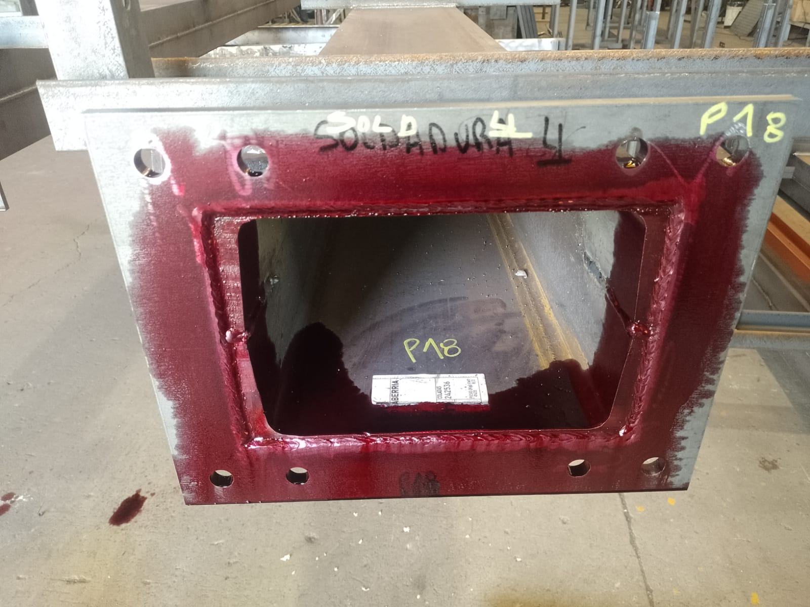
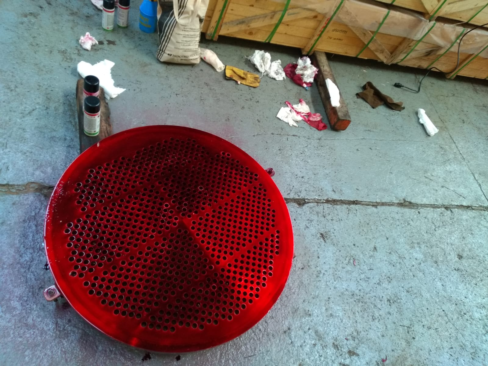
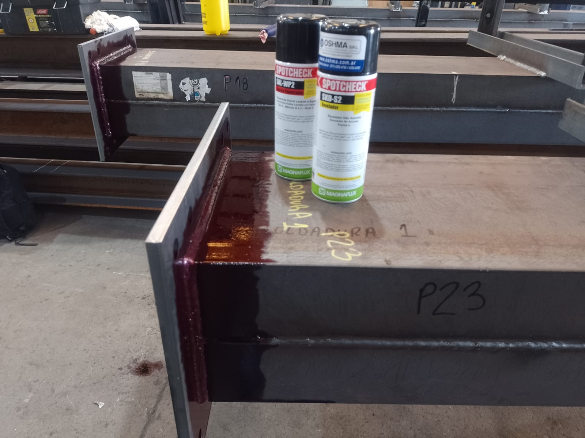

Fisuras superficiales
Indicaciones asociadas a discontinuidades abiertas a la superficie.
Ensayo superficial
Método de Ensayo No Destructivo utilizado para detectar discontinuidades abiertas a la superficie en materiales sólidos y no porosos.
Aplicable a soldaduras, piezas mecanizadas y componentes de distintos materiales cuando las condiciones de superficie permiten realizar el ensayo.
Podés enviar fotos, material, tipo de componente, cantidad, ubicación y norma o especificación aplicable.

El método
La inspección por Líquidos Penetrantes permite revelar discontinuidades abiertas a la superficie mediante la aplicación de un líquido con capacidad de penetrar por capilaridad en pequeñas aberturas superficiales.
Luego de retirar el exceso de penetrante y aplicar el revelador correspondiente, las posibles discontinuidades pueden producir indicaciones visibles que deben ser interpretadas por el técnico.
La presencia de una indicación no implica automáticamente rechazo. Su evaluación depende del procedimiento, la geometría y el criterio de aceptación aplicable.

Objetivo de la inspección
Indicaciones asociadas a discontinuidades abiertas a la superficie.
Indicaciones superficiales asociadas a cavidades que comunican con la superficie, cuando las condiciones permiten detectarlas.
Evaluación superficial de soldaduras y zonas asociadas.
Control superficial de áreas reparadas por terceros para evaluar posibles indicaciones relevantes.
La sensibilidad depende del estado de la superficie, limpieza, técnica aplicada, tiempos del proceso y características de la discontinuidad.
Aplicaciones habituales
Condiciones de aplicación
El método puede utilizarse sobre diversos materiales sólidos y no porosos cuando la superficie permite una correcta limpieza, aplicación y observación.
Antes de confirmar el ensayo se revisan material, estado superficial, recubrimientos, porosidad, geometría, acceso y criterio aplicable.
Superficies excesivamente rugosas, porosas, contaminadas o con determinados revestimientos pueden reducir la sensibilidad o impedir una correcta aplicación.
Proceso técnico
Se analiza el componente, material, zona y requisitos.
Se prepara la superficie.
Se aplica conforme a la técnica definida.
Se retira el exceso superficial.
Se interpretan las indicaciones observadas.
Se documentan las zonas y evaluación.
La secuencia exacta, productos y tiempos dependen del procedimiento y del sistema utilizado.
Recursos técnicos
Atom NDT dispone de consumibles para realizar inspecciones por Líquidos Penetrantes, seleccionados según los requisitos del trabajo y el procedimiento aplicable.

Resultados
La evaluación se limita a las zonas inspeccionadas, al método aplicado y al criterio acordado. No constituye por sí sola una evaluación integral de aptitud para servicio.
Alcance técnico
Debe permitir la aplicación y observación.
Puede limitar la técnica.
Es necesaria para un resultado interpretable.
Condicionan el alcance.
Pueden impedir la aplicación.
Se definen según el procedimiento.
La viabilidad del método se confirma después de evaluar las condiciones reales del componente.
Respaldo profesional
Contamos con profesionales calificados. Cristian Czornobaj, responsable técnico de Atom NDT, cuenta con calificación Nivel 2 en Líquidos Penetrantes para aplicaciones industriales. Las credenciales indicadas corresponden al responsable técnico.
Conocer nuestro respaldo técnicoPuede aplicarse sobre diversos materiales sólidos y no porosos, pero las condiciones de superficie deben evaluarse antes del ensayo.
No. El método está orientado a discontinuidades abiertas a la superficie.
Sí. La preparación superficial es una parte importante del proceso.
Sí, cuando las condiciones del material y la superficie permiten aplicar correctamente la técnica.
Sí. Se evalúan trabajos puntuales y trabajos de mayor alcance.
Sí. El alcance puede incluir informe, registro fotográfico, ubicación de indicaciones y evaluación según el criterio aplicable.
Evaluación inicial
Enviá fotos, material, tipo de componente, cantidad, ubicación y requisitos del trabajo para evaluar la aplicación de Líquidos Penetrantes.
Atención con coordinación previa. No se ofrecen servicios de emergencia ni atención nocturna.